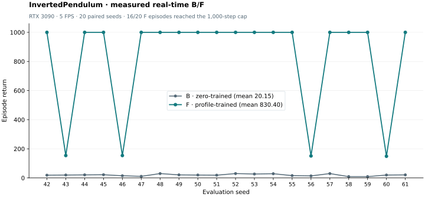
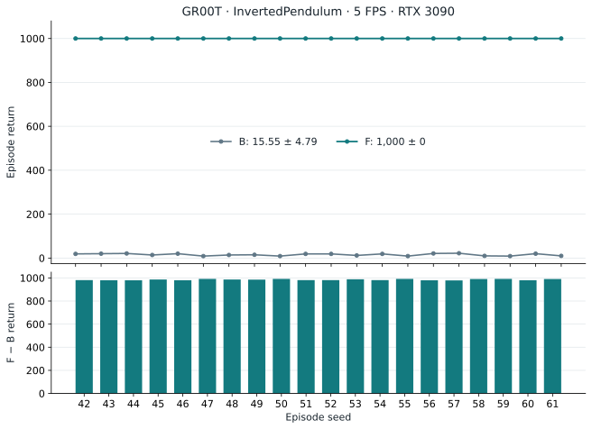
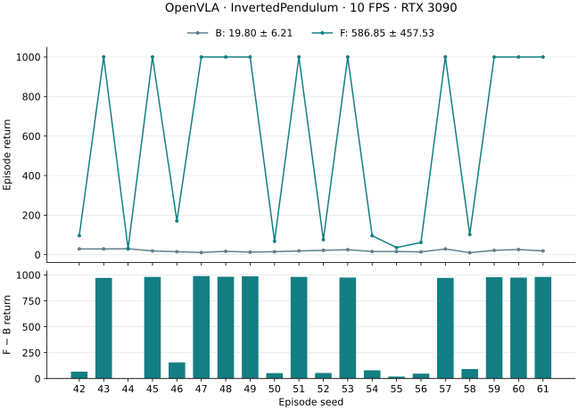
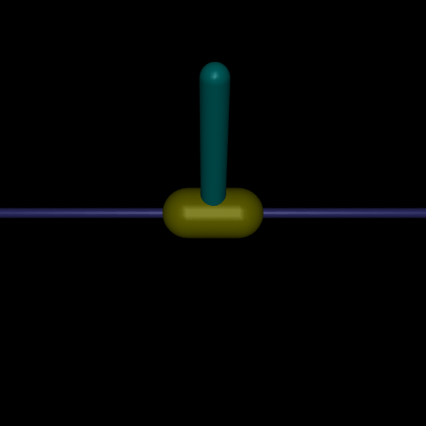
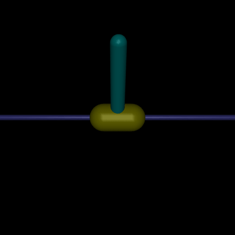
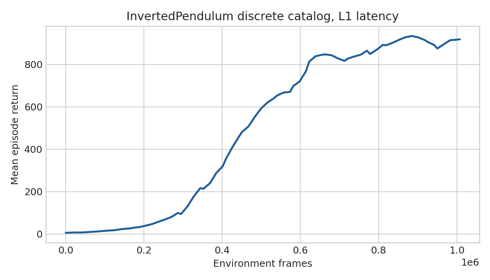
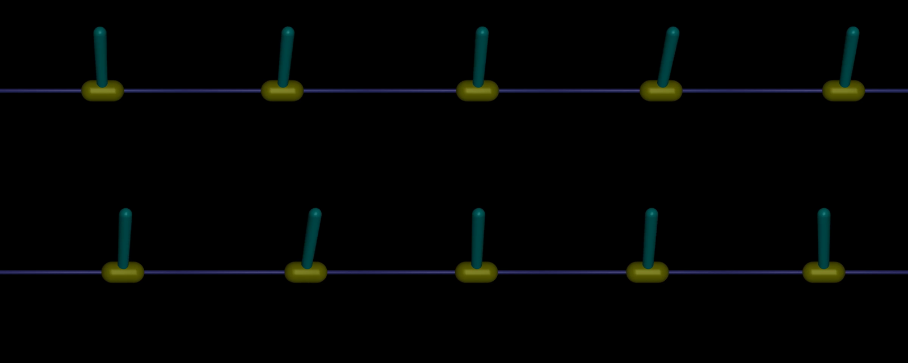
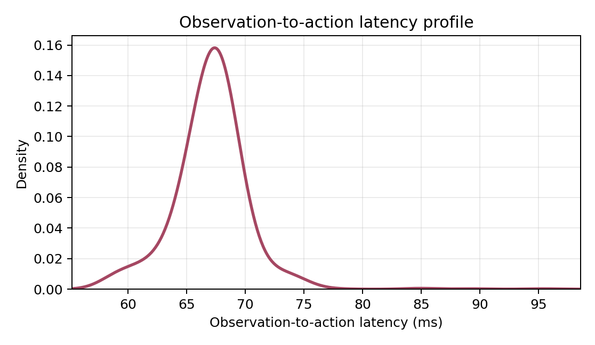

Results / final report
Results at a glance
All three model pipelines completed measured real-time evaluation. Each retains its own clock, training recipe and evidence; Pi0.5 uses 5 FPS / H1.
| Model / run | B · zero-trained | F · profile-trained | Mean gain |
|---|---|---|---|
| Pi0.5 (QwenPI_v3)5 / 5 FPS | 20.15 ± 6.48 | 830.40 ± 339.20 | +810.25+4,021.09% |
| GR00T (QwenGR00T)5 / 5 FPS | 15.55 ± 4.79 | 1,000.00 ± 0.00 | +984.45+6,330.87% |
| OpenVLA (QwenOFT)10 / 10 FPS | 19.80 ± 6.21 | 586.85 ± 457.53 | +567.05+2,863.89% |
Return = mean ± population SD. B/F evaluate zero-trained/profile-trained VLAs with measured inference latency. These are within-model comparisons from one training run, not a controlled architecture ranking: clocks, recipes and realized latency distributions differ.
Machine-readable model results · Models and data index · All environments
Pi0.5 / GR00T task and evaluation contract
InvertedPendulum-v4 retains its native physics, reward and termination. The interface uses four ordered state values and five discrete forces [−3, −1.5, 0, 1.5, 3]. Both Pi0.5 and GR00T receive one RGB224 frame plus state and emit one action (H1). The benchmark clock is 5/5 FPS; hold/FIFO scheduling, one inference worker and measured-only CUDA-synchronized latency are shared by B/F.
Machine-readable results · Models and data
Mean gain = F − B; percentage = (F − B) / B × 100%. An unavailable F has no gain estimate.
Pi0.5 / QwenPI_v3 · H1 · 5 FPS
Pi0.5: improvement on all 20 paired seeds
Real-time return improved from 20.15 ± 6.48 to 830.40 ± 339.20: a mean gain of 810.25 (+4,021.09%), with 20 wins, no ties and no losses. Sixteen F episodes reached the 1,000-step cap; the other four returned 149–154. This completes the fixed-budget pipeline; the teacher eligibility threshold is not a new VLA acceptance rule.
| Stage / checkpoint | Execution | Episodes | Return | Mean raw steps |
|---|---|---|---|---|
| L0 · zero VLA | Simulated, zero latency | 20 | 1,000.00 ± 0.00 | 1,000.00 |
| B · zero VLA | RTX 3090, measured | 20 | 20.15 ± 6.48 | 20.15 |
| E · selected APPO teacher | Simulated IID | 10 | 1,000.00 ± 0.00 | 1,000.00 |
| F · profile VLA | RTX 3090, measured | 20 | 830.40 ± 339.20 | 830.40 |
L0 simulation, measured B/F and teacher E are distinct evaluations. B/F use seeds 42–61; teacher selection uses 104771–104790 and E10 repeats its first ten seeds. The project implementation is StarVLA QwenPI_v3 with a fixed Qwen3-VL backbone and a fresh action head, without Bridge weights.


All 20 paired seed results
| Seed | B | F | F − B |
|---|---|---|---|
| 42 | 19 | 1,000 | +981 |
| 43 | 20 | 154 | +134 |
| 44 | 21 | 1,000 | +979 |
| 45 | 22 | 1,000 | +978 |
| 46 | 15 | 154 | +139 |
| 47 | 11 | 1,000 | +989 |
| 48 | 30 | 1,000 | +970 |
| 49 | 21 | 1,000 | +979 |
| 50 | 20 | 1,000 | +980 |
| 51 | 19 | 1,000 | +981 |
| 52 | 30 | 1,000 | +970 |
| 53 | 27 | 1,000 | +973 |
| 54 | 29 | 1,000 | +971 |
| 55 | 16 | 1,000 | +984 |
| 56 | 14 | 151 | +137 |
| 57 | 30 | 1,000 | +970 |
| 58 | 9 | 1,000 | +991 |
| 59 | 9 | 1,000 | +991 |
| 60 | 20 | 149 | +129 |
| 61 | 21 | 1,000 | +979 |
Measured latency and runtime audit
| Metric | B · zero-trained | F · profile-trained |
|---|---|---|
| Episodes / cap | 20 / 1,000 | 20 / 1,000 |
| Mean episode latency | 137.89891 ms | 139.39327 ms |
| Action-weighted mean / P95 | 137.91 / 143.60 ms | 139.36 / 144.61 ms |
| Dropped / submitted observations | 0 / 403 | 0 / 16,608 |
| Invalid / dropped actions | 0 / 0 | 0 / 0 |
| Raw steps / action events | 403 / 383 | 16,608 / 16,588 |
| Mean step interval | 200.03673 ms | 200.00076 ms |
| Episode-wall-time FPS | 3.711 | 4.934 |
| Episodes at 1,000-step cap | 0 / 20 | 16 / 20 |
The target clock is 5 FPS, and observed within-episode cadence is approximately 200 ms. The episode-wall-time FPS metric includes process startup overhead, which has a larger effect on short B episodes. All step rewards, action records, observation counters, prompt hashes and checkpoint hashes were audited. P/B/F realized delays differ; no equal-delay causal claim is made.
Pi0.5 / Pipeline and provenance
Actual-profile teacher, fresh VLA training
| Stage | Verified result | Evidence |
|---|---|---|
| L0 · source and zero VLA | Reused shared APPO H1 data, 90/10 episodes; fresh 2,000 updates; simulated 20 all 1,000. | L0 data / QA |
| P · measured profile | 5 × 10 episodes, cap 900; 990 valid samples, 500 warmup excluded; mean 141.77 ms / P95 148.17 ms. | Profile evidence |
| S / E · APPO teacher | Original seed 0 / 1M budget; 1,007,616 counted env steps. Final20/best20 both 1,000 ± 0; tie selects Final. E10 all 1,000. | Inference bundles |
| R / C · demonstrations | 12/12 probe; 100 accepted of 100 total attempts ≤120. All actual replay returns 1,000 >900; 90/10 split. | Raw data / QA |
| V · profile VLA | Fresh 2,000 updates; backbone + fresh head, no L0 continuation. Saved reload and real-state finite forward passed. | Profile model |
| F · real-time evaluation | 20 episodes, seeds 42–61, 16,608 steps; paired mean gain 810.25; 20/20 improve. | Paired comparison |
Training recipe, state contract and storage provenance
Native InvertedPendulum-v4 physics, rewards and termination are unchanged. The interface uses state4 and five forces [−3, −1.5, 0, 1.5, 3], one RGB224 frame, H1/future0, 5/5 FPS, hold/FIFO and one inference worker.
Both VLAs: seed 42, global 64 = micro 8 × accumulation 4 × 2 H100; 4 inference timesteps, 2 diffusion repeats; VLM/head/base learning rates 1e−5/1e−4/2e−5; warmup 100; 200 held-out batches and saved weights every 500 updates. State uses the continuous projector and train-only minmax exactly once, verified against raw samples in both loaders.
The reused L0 source remains 25 FPS; only its derived prompt/FPS metadata changes to 5 FPS. The new profile demonstrations use the actual Pi05 profile, IID seed 0 / worker slot 0. Profile prompt key 1 labels one 200 ms tick after discretization; F uses measured-only latency and does not add another 200 ms delay. B uses its L0 prompt key 0.
Model files and supporting evidence · Complete stage values and methods.
Zero model · Profile model · Dataset · Full F traces · Models and data index
Model 01 / GR00T · H1 · 5 FPS
GR00T: completed real-time evaluation
F completed all 20 evaluation episodes. The 20,000 raw steps were audited against rewards, seeds and the 200 ms clock. Paired comparison gives 20 wins, 0 ties and 0 losses, with a mean gain of 984.45.
| Checkpoint / stage | Execution | Episodes | Return mean ± SD | Mean raw steps |
|---|---|---|---|---|
| Zero VLA · L0 | Simulated, zero latency | 20 | 1,000.00 ± 0.00 | 1,000.00 |
| Zero VLA · B | 3090 real-time, measured | 20 | 15.55 ± 4.79 | 15.55 |
| Profile teacher · E | Simulated IID, one worker | 10 | 1,000.00 ± 0.00 | 1,000.00 |
| Profile VLA · F | 3090 real-time, measured | 20 | 1,000.00 ± 0.00 | 1,000.00 |


All 20 paired seed results
| Seed | B return | F return | F − B |
|---|---|---|---|
| 42 | 19 | 1,000 | +981 |
| 43 | 20 | 1,000 | +980 |
| 44 | 21 | 1,000 | +979 |
| 45 | 14 | 1,000 | +986 |
| 46 | 20 | 1,000 | +980 |
| 47 | 9 | 1,000 | +991 |
| 48 | 14 | 1,000 | +986 |
| 49 | 15 | 1,000 | +985 |
| 50 | 9 | 1,000 | +991 |
| 51 | 19 | 1,000 | +981 |
| 52 | 19 | 1,000 | +981 |
| 53 | 12 | 1,000 | +988 |
| 54 | 19 | 1,000 | +981 |
| 55 | 9 | 1,000 | +991 |
| 56 | 21 | 1,000 | +979 |
| 57 | 22 | 1,000 | +978 |
| 58 | 10 | 1,000 | +990 |
| 59 | 9 | 1,000 | +991 |
| 60 | 20 | 1,000 | +980 |
| 61 | 10 | 1,000 | +990 |
Latency, drops and actual frame cadence
| Metric | B | F |
|---|---|---|
| Mean of episode latency means (ms) | 106.07 | 106.65 |
| Mean raw steps | 15.55 | 1,000.00 |
| Dropped observations | 0 | 0 |
| Dropped actions | 0 | 0 |
| Invalid actions | 0 | 0 |
The latency distributions are reported as realized, not treated as identical. Episode-level actual_env_fps includes broader wall time and understates cadence for short B episodes; raw step timestamps verify the 5 FPS schedule. No separate teacher threshold is imposed as a new VLA acceptance rule.
Verified paired comparison · F metrics, config and audit · B evidence
L0 simulation, measured B/F and teacher E are distinct evaluations. E10 reuses the selected teacher’s first ten selection seeds; it is not an independent extra seed block.
Teacher E10 source / step audit · Table values, definitions and provenance
GR00T / Training and provenance
From the actual profile to a fresh VLA
| Stage | Completed result | Evidence |
|---|---|---|
| Zero VLA | 2,000 updates; seed 42; global batch 64. Original APPO H1 data reused; L0 simulation completed. | Stage record |
| P · latency profile | 5 × 10 episodes on RTX 3090; 800 samples; mean 108.09 ms / P95 114.50 ms. | Stage record |
| S / E · APPO teacher | Fresh APPO, 1M target frames. Selected final: 1,000.00 ± 0.00 over 20 selection episodes. E10 reported in the evaluation table. | Stage record |
| R / C · demonstrations | 100 accepted / 100 attempts; 90 / 10 episode split. Conversion verified. | Stage record |
| V · profile VLA | Fresh initialization; 2,000 updates; save and reload verified. | Stage record |
| F · measured real-time | Completed 20 episodes, seeds 42–61; actual RTX 3090 inference latency. | Stage record |
Full training recipe, data contract and provenance
| Stage | Verified result | Evidence |
|---|---|---|
| L0 data / VLA | Reused 100 original APPO H1 episodes; 90,000/10,000 rows. Prompt/FPS metadata retimed 25→5; images, states, actions, rewards and split unchanged. No new L0 teacher. VLA 2000 updates, seed 42, global 64. | Data and validation · L0 model / eval |
| P · actual latency | 5×10 episodes on 3090; cap 900 with natural termination. 800 canonical samples; mean 108.09 ms, P95 114.50 ms, max 134.29 ms. | Immutable profile |
| S · APPO teacher | Fresh seed 0, 1M requested frames; 1,007,616 completed at the asynchronous batch boundary. Final and training-best each 20 episodes: 1000 ± 0; Final wins the tie, step 1968. | Teacher bundle · Selection |
| E / probe | Simulated IID E10: 1000 ± 0,10/10 above 900. Bounded 12-attempt probe: 12 accepted. Teacher selection seeds 104771–104790; E reuses the first 10. | Teacher verification |
| R / C · demonstrations | 100 accepted / 100 attempts, 0 rejects; 90/10 episodes and 90,000/10,000 rows. Every actual replay return 1000, strict gate> 900. Native five-way targets; train-only state minmax once. | Raw data / QA |
| V · profile VLA | Fresh model initialization; 2000 updates, seed 42, global 64. Saved-bundle reload and finite real held-out forward[1,1,5] passed. | Final model / validation |
| F · measured real-time | 20 matched seeds 42–61, all 1000 steps. Completed and raw-trace verified; model/data/results published. | Final evaluation |
Both GR00T VLAs use Qwen3-VL-4B-Instruct, a DiT-B action head, 4 inference timesteps and 8 diffusion repeats. Training uses microbatch 16×accumulation 4, warmup 100, VLM/action learning rates 10⁻⁵/10⁻⁴, and 200 held-out batches every 500 updates. The profile model starts from the same base initialization rule, not the trained L0 weights.
Prompt, normalization and seed conventions
The profile prompt map contains key 1: one raw tick (200 ms at 5 FPS). This is the trained condition label; F measures its own inference latency and adds no 200 ms or IID delay. The exact B/F changes are model/config/manifest/prompt-map paths, key 0→1, and output directory.
State normalization uses training-only min/max, shared by validation and inference. APPO training/export use action-delay IID; E also models one-worker occupancy. E10 repeats the first 10 checkpoint-selection seeds and is not 10 additional independent held-out seeds. The strict> 900 gate is for demonstration collection.
Model and profile identities
Model configurations, teacher checkpoints and profile data are available in the models and data index.
Model 02 / OpenVLA · H1 · 10 FPS
OpenVLA: completed real-time evaluation
The OpenVLA label denotes QwenOFT. Environment and observation clocks are 10 FPS; seeds 42–61 identify the matched real-time episode block. This result is separate from the GR00T H1 / 5 FPS run.
Paired seeds: 19 wins, 1 ties, 0 losses. Mean return changes by +567.05. Both checkpoints were evaluated with measured real-time latency.
| Checkpoint / stage | Execution | Episodes | Return mean ± SD | Mean raw steps |
|---|---|---|---|---|
| Zero VLA · L0 | Simulated, zero latency (25 FPS) | 20 | 707.15 ± 357.20 | 707.15 |
| Zero VLA · B | 3090 real-time, measured | 20 | 19.80 ± 6.21 | 19.80 |
| Profile teacher · E | Simulated IID, one worker | 10 | 791.90 ± 280.04 | 791.90 |
| Profile VLA · F | 3090 real-time, measured | 20 | 586.85 ± 457.53 | 586.85 |


Adaptation, training and stage-by-stage evidence · Exact paired results and sources
L0 uses 25 FPS, while B/E/F use 10 FPS. Their configurations and seed protocols are listed below. Tables do not imply matched L0 and real-time episodes.
OpenVLA adaptation and training details
01 / Adaptation
Adaptation
The agent inspects the environment API, derives the action and observation contract, implements the adapter, and verifies native behavior before training. The task is to keep the pole upright by applying horizontal cart forces. Reward is 1 per surviving step, so episode return equals episode length, capped at 1,000.
Inspect the environment and choose the representation
| Environment fact | Agent adaptation decision |
|---|---|
| Native action: one float32 force in [−3, 3] | Expose five symmetric forces: −3, −1.5, 0, 1.5, 3. Preserve exact native force values when applying the selected action. |
| Native observation: four float64 values | Retain cart position, pole angle, cart velocity and pole angular velocity for the small model. The RGB+state VLA also receives these four ordered values. |
| RGB rendering: HWC uint8, 480×480 | Use one current frame; resize to the saved VLA input size of 224×224. Preserve the unmodified render for API inspection. |
| One step: frame skip 2 × simulator timestep 0.02 s | Treat each step as one raw tick. Native training clocks are 25/25 FPS; profile experiments use 10/10 FPS without changing physics or observation stride. |
| The installed runtime supports InvertedPendulum-v 4 | Use the registered task and retain native reset, reward, termination and the 1,000-step TimeLimit. |
| Delayed actions need an initial action | Use action ID 2, zero force, before the first result is available; hold the last applied action between updates. Zero force is neutral actuation, not a guarantee of balance. |
The five-action discretization is an explicit engineering choice for the categorical policy head, not a property inferred from Box bounds or a claim of continuous-control optimality.
| Policy ID | Action label | Native force |
|---|---|---|
| 0 | push_left_hard | −3 |
| 1 | push_left_soft | −1.5 |
| 2 | zero_force | 0 |
| 3 | push_right_soft | 1.5 |
| 4 | push_right_hard | 3 |
Implement and propagate the contract
LatencyBench/InvertedPendulumDiscrete-v0 wraps the native task with Discrete(5). Its step method converts the selected ID into a one-element native float32 action. The generic Gymnasium adapter imports the registration module and delegates reset and step; Sample Factory adds the action catalog and latency scheduler. The exporter restores the same environment from the checkpoint, and conversion produces a five-class one-hot action carrier, ordered state, manifest and latency prompt map.
The VLA used here is QwenOFT with Qwen3-VL-4B-Instruct, stored under the project’s OpenVLA artifact namespace. It consumes RGB plus discretized-text state and predicts one of the five actions. An older RGB-only scratch launcher is not the model trained in these experiments.
Action wrapper · Gymnasium adapter · RL integration · Adaptation guide · Probed environment config · VLA task manifest
Verify the adaptation
At seed 123, reset and all five executed steps before termination matched the native task under the same mapped forces: observations, rewards, termination and truncation. The planned sequence contained eight actions. A fixed-L1 scheduler check verified a 40 ms delay at 25 FPS and initial no-op ID 2. The focused generic/MuJoCo test run passed 76 tests with 7 warnings; a broader dependency check had 122 passes and 13 failures from an absent legacy Flappy dependency.
API probe · Probe log · Scaffold output · Parity trace · Parity script · L1 scheduler trace · Scheduler script · Test log · Environment documentation


Additional fixed-L1 adapter validation: training curve and complete rollout
This separate validation uses fixed L1 (40 ms at 25 FPS), not zero latency. APPO completed 1,015,808 frames at an overall 2,888.1 training FPS. Ten evaluation episodes each reached 1,000 steps: return 1,000 ± 0, mean length 1,000, scheduled latency 40 ms. The full video is episode 6, rendered at 480×480 and 25 FPS for 40 seconds.
Fixed-L1 config · Training log · Evaluation JSON · Evaluation output


02 / Zero-latency small model training & evaluation
Zero-latency small model training & evaluation
Train the state-based categorical policy with zero injected latency at 25/25 FPS. The 1M-frame budget completed at 1,015,808 frames. Best-reward selection chose the checkpoint at 581,632 frames with training reward statistic 1,000; this statistic is not an independent evaluation mean.
| Training field | Value |
|---|---|
| Algorithm / network | APPO · MLP 512×512 · no RNN |
| Training seed / budget | 0 / 1,000,000 target frames |
| Sampling | 1 worker × 16 environments · rollout 64 |
| Batch / learning rate | 1,024 / 0.000303 |
| Observation / action | 4D native state / five force IDs |
| Latency / clock | Zero injected latency / 25 FPS environment and observations |
Rollout quality evidence
The saved teacher supplied 100 accepted episodes from 100 attempts under the strict return > 900 gate. All 100 reached 1,000 raw steps, producing 100,000 decision rows. This is exporter quality evidence, not an independent held-out small-model evaluation. A separate L0 small-model evaluation summary is not present in the synchronized evidence; the fixed-L1 validation above must not be substituted for it.
Resolved L0 teacher config · L0 training YAML · Complete L0 training log · Teacher rollout metadata · Source training contract
03 / Zero-latency VLA training & evaluation
Zero-latency VLA training & evaluation
Convert the teacher demonstrations to native five-class LeRobot actions with one 224×224 RGB frame and four ordered state values. The dataset contains 100 episodes / 100,000 rows, split into 90,000 training and 10,000 validation rows. All accepted returns are strictly above 900.
| Training field | Value |
|---|---|
| Model / state encoding | QwenOFT · Qwen3-VL-4B-Instruct · discretized-text state |
| Objective | Five-class discrete cross-entropy |
| Training steps / seed | 2,000 / 42 |
| Batch / accumulation | 8 × 2 = 16 effective samples |
| Optimizer / schedule | AdamW · cosine decay · 100 warmup steps |
| Held-out validation | Every 500 steps · 200 batches |
| Training latency / clocks | Zero / 25 FPS environment and observations |
Fixed-latency evaluation of the trained VLA
| Evaluation latency | Episodes | Return mean ± std | Mean steps | Full horizon |
|---|---|---|---|---|
| L0 · 0 ms | 20 | 707.15 ± 357.20 | 707.15 | 11/20 |
| L2 · 80 ms | 20 | 15.45 ± 4.41 | 15.45 | 0/20 |
The saved post-training evaluation uses a 1,000-step cap, 224×224 input and configured evaluation seed 42. Individual seed values are null in the archived JSON, so an exact per-seed pairing is not claimed. These fixed-latency results are separate from the measured realtime baseline below.
L0/L2 evaluation JSON · Complete VLA training and evaluation config · Dataset manifest · Normalization statistics · Latency prompt map
04 / Profiling
Profiling
Profile the zero-latency VLA on RTX 3090 at 10/10 FPS with one inference worker, 224×224 RGB and four state values. Use five sessions × ten episodes, seeds 42–51 in each session, a 600-raw-step cap and natural termination. OSMesa rendering and spawn-based environment processes are used throughout measured evaluation.
| Samples admitted / attempted | Capacity drops | Mean ± std | P50 / P95 / P99 | Maximum |
|---|---|---|---|---|
| 984 / 985 | 1 (0.102%) | 67.09 ± 3.35 ms | 67.23 / 71.26 / 74.64 ms | 105.25 ms |
Measure observation-to-action latency, including extraction, IPC, preprocessing, inference and decoding. Exclude warmup. One of 984 admitted samples exceeded the 100 ms raw tick; dropped observations receive no fabricated latency. Repeated sessions characterize latency, not independent training seeds.

Immutable profile · IID distribution · Burst model · Profiling validation · Profile publication receipt
05 / Baseline VLA evaluation
Baseline VLA evaluation
Evaluate the same zero-latency-trained VLA under measured realtime execution. No profile delay is added on top of measured latency. This establishes the comparison for the profile-trained VLA.
| Episodes / seeds | Clocks | Return mean ± std | Mean steps | Latency mean / P95 |
|---|---|---|---|---|
| 20 / 42–61 | 10 / 10 FPS | 19.80 ± 6.21 | 19.80 | 67.22 / 71.28 ms |
The 1,000-step horizon, RGB/state/action contract and renderer are held constant for the final comparison. There were 394 admitted observations out of 396, two capacity drops and no invalid actions.
Baseline summary · Per-episode results · Canonical latency records · Resolved evaluation config
06 / Profile-latency small model training & evaluation
Profile-latency small model training & evaluation
Train the small model from the same initialization with the measured IID latency distribution and 10/10 FPS clocks. Preserve the 1M-frame target, APPO optimizer, network, batch and sampling recipe; training seed 0 is unchanged. Independent evaluation uses configuration seed 42. Training completed 1,015,808 frames. Best-reward selection chose the checkpoint at 974,848 frames, with training statistic 586.690.
Independent simulated evaluation
| Episodes / actual seeds | Return mean ± std | Mean steps | Pass return > 900 | Sampled latency mean / P95 |
|---|---|---|---|---|
| 10 / 104771–104780 | 791.90 ± 280.04 | 791.90 | 6/10 | 67.09 / 71.26 ms |
Evaluation uses a simulated one-worker inference pool with capacity 1 and a 1,000-step cap. It admitted 7,914 observations, dropped five, and recorded no invalid actions. Training and exporter inject action-delay IID only; evaluation additionally models worker occupancy and capacity drops. The strict data gate remains > 900.
Checkpoint selection · Complete teacher publication · Evaluation summary · Per-episode results · Resolved evaluation config
IID sampler correction and data validation
Demonstrations use the measured IID latency distribution. Every materialized trajectory passed the strict return gate and matched its accepted probe record.
Sampler correction and validation · Actual episode audit · Replay quality audit
07 / Profile-latency VLA training & evaluation
Profile-latency VLA training & evaluation
Train the VLA on corrected profile-latency demonstrations, retaining the zero-latency model’s architecture and 2,000-step recipe. The 100 accepted episodes contain 99,333 rows: 89,398 training rows and 9,935 validation rows across a 90/10 episode split. Every actual return exceeds 900 (minimum 912; mean 993.33), and materialized rows match the accepted probe records.
| Training field | Value |
|---|---|
| Input / action | 224×224 RGB + four state values / five-class categorical |
| Steps / batch / seed | 2,000 / 8 × 2 accumulation / 42 |
| Loss / held-out loss | Cross-entropy · final train 0.000365 · validation 0.05910 |
| Validation / completion | Every 500 steps · 200 batches · exit 0 |
| Artifacts | Corrected raw and converted data verified; complete final model bundle verified (22 files) |
Matched realtime evaluation
| Model | Episodes | Return mean ± std | Mean steps | Latency mean / P95 |
|---|---|---|---|---|
| Zero-latency-trained VLA | 20 | 19.80 ± 6.21 | 19.80 | 67.22 / 71.28 ms |
| Profile-latency-trained VLA | 20 | 586.85 ± 457.53 | 586.85 | 67.22 / 70.00 ms |
Both evaluations use seeds 42–61, 10/10 FPS and a 1,000-step cap. The profile-trained VLA reached the full horizon in 11/20 episodes. It admitted 11,736 of 11,737 observations, with one capacity drop and no invalid or dropped actions. The new bundle uses trained prompt key 1 (100 ms). The gain in mean return is 567.05; variability remains high and the result covers one training run.
Final evaluation summary · Per-episode results · Canonical latency records · Final evaluation config · Training completion and losses · Dataset audit · Dataset publication · Model publication · W&B training record · Complete model bundle · Complete experiment evidence
Realtime policy demonstration
A separately recorded demonstration uses selected seed 43: return 1,000 over 1,000 steps at 10 FPS, with no observation drops or invalid actions. This selected success illustrates behavior and is not another statistical evaluation. Its measured latency is 66.81 ms mean / 69.69 ms P95.
Demonstration metrics · First frame · Middle frame · Final frame


Models / data / evidence
Models, data and scientific evidence
Pi0.5: Verified publication index · Final model · Complete experimental evidence.
- GR00T zero-latency checkpoint · Profile checkpoint and completed F result · Selected APPO teacher
- GR00T 5 FPS L0 data and QA · Profile data and final B/F evidence
- Compact numerical results · Publication / source index · OpenVLA experimental evidence
Weights and raw demonstration data remain on HF and the experiment servers. This local report keeps display media and compact indices only.
Complete B/F step, action, latency and observation records are available with the evaluation evidence. B traces · F traces.
| Artifact | GR00T | OpenVLA |
|---|---|---|
| Models, raw data and provenance | Models and data index | Pinned archive index |
| Evaluation and comparison | Stage results · Normalized tables | Paired returns and sources |
Model weights, datasets and evaluation records are linked below. This report includes the numerical results, plots and experimental protocols.